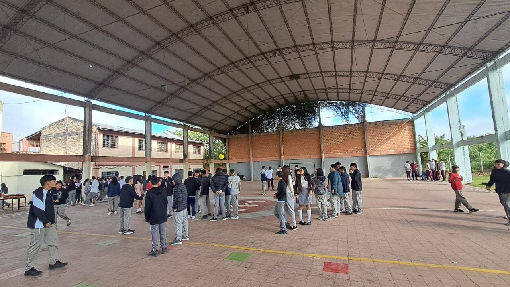

Fotografías de la experiencia


Una experiencia de convivencia y aprendizaje en el Bañado Sur.
Fuimos al Colegio San Cayetano, en el Bañado Sur de Paraguay, como parte de un proyecto de servicio. Compartimos con los estudiantes mediante juegos, fútbol y una merienda.
Fue una experiencia de diversión, convivencia y aprendizaje entre los estudiantes y nosotros.
Compartir un momento diferente con los estudiantes mediante actividades recreativas, fomentando la alegría, el compañerismo y el respeto.
Los chicos jugamos un partido de fútbol contra los estudiantes del colegio. Perdimos, pero nos divertimos y compartimos un buen momento.
También jugaron las chicas. Algunas no sabían jugar muy bien, pero igual participaron para compartir, divertirse y pasarla bien.
Compartimos una merienda entre todos, creando un momento de convivencia y compañerismo.
Mas Actividades→Aprendimos a compartir y trabajar juntos.
Comprendimos que ayudar también es dedicar tiempo.
Aprendimos a respetar a los demás durante los juegos.
